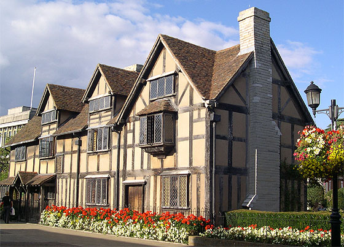
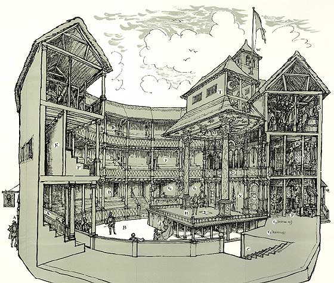

En torno a 1860, al tiempo que culminaba su obra Los miserables, Victor Hugo escribió desde el destierro: "Shakespeare no tiene el monumento que Inglaterra le debe". A esas alturas del siglo XIX, la obra del que hoy es considerado el autor dramático más grande de todos los tiempos era ignorada por la mayoría y despreciada por los exquisitos. Las palabras del patriarca francés cayeron como una maza sobre las conciencias patrióticas inglesas; decenas de monumentos a Shakespeare fueron erigidos inmediatamente.
Los orígenes

En el sexto año del reinado de Isabel I de Inglaterra, el 26 de abril de 1564, fue bautizado William Shakespeare en Stratford-upon-Avon, un pueblecito del condado de Warwick que no sobrepasaba los dos mil habitantes, orgullosos todos ellos de su iglesia, su escuela y su puente sobre el río. Uno de éstos era John Shakespeare, comerciante en lana, carnicero y arrendatario que llegó a ser concejal, tesorero y alcalde. De su unión con Mary Arden, señorita de distinguida familia, nacieron cinco hijos, el tercero de los cuales recibió el nombre de William. No se tiene constancia del día de su nacimiento, pero tradicionalmente su cumpleaños se festeja el 23 de abril, tal vez para encontrar algún designio o fatalidad en la fecha, ya que la muerte le llegó, cincuenta y dos años más tarde, en ese mismo día.
Shakespeare en la ciudad del teatro

A partir de ese momento hay una laguna en la vida de Shakespeare, un período al que los biógrafos llaman "los años oscuros". No reaparece ante nuestros ojos hasta 1593, cuando es ya un famoso dramaturgo y uno de los personajes más populares de Londres. Entretanto se le atribuyen los siguientes empleos: pasante de abogado, maestro de escuela, soldado de fortuna, tutor de noble familia e incluso guardián de caballos a la puerta de los teatros. Pasarían varios meses hasta que pudiera ingresar en ellos y meterse entre bastidores, primero como traspunte o criado del apuntador, luego como comparsa, más tarde como actor reconocido y, por fin, como autor de gran y merecido prestigio.